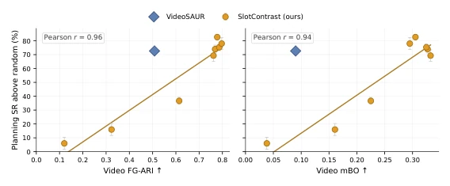
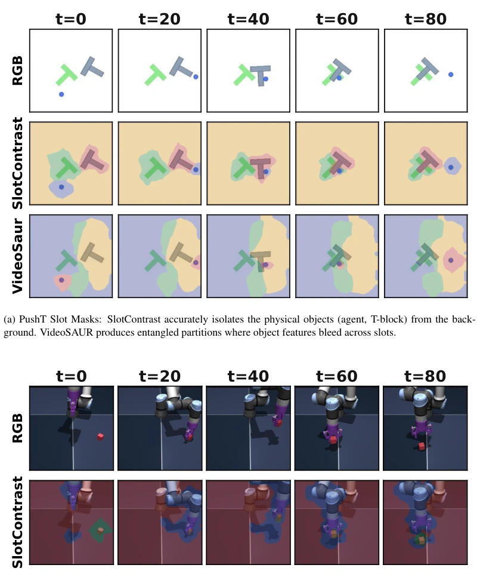
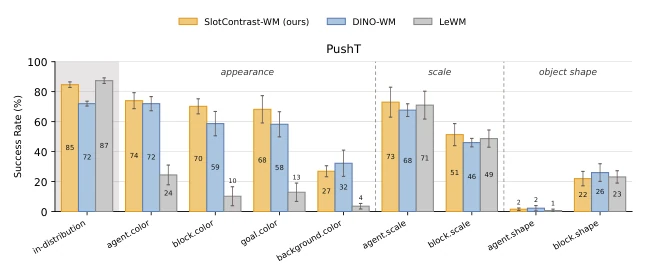
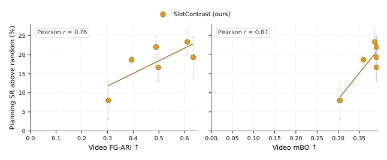
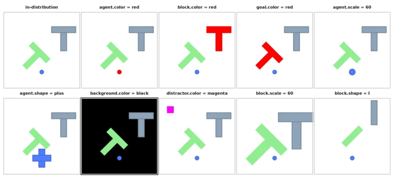
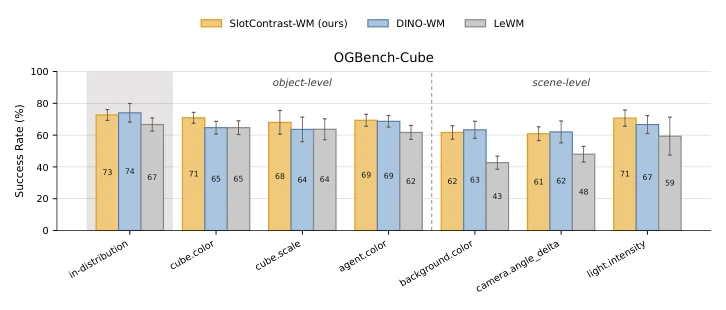

This paper cools down the hype surrounding "Object-Centric World Models". Titled "Better Slots", it turns out that as long as slots are bound tightly enough, those auxiliary masked objectives and proprioception inputs are actually just patching up for poor slots. More critically, what truly holds up is frozen pre-trained features (DINO), not object-centricity itself. End-to-end global tokens like LeWM collapse directly out-of-distribution, while DINO-WM and OCWM are surprisingly similar. This paper acts like a calm forensic examiner, dissecting OCWM's "inflated appearance", pointing out that representation quality is the way to go, and pre-training is the moat. Although OCWM theoretically conforms to causal structure, experiments show its advantage is overestimated, and metrics fail in small object scenarios.
研究动机Motivation
现有 OCWM（如 C-JEPA, OC-STORM）大多只在分布内评估，默认物体中心归纳偏置能提升样本效率和泛化，但没人验证“槽位质量”是否真能转化为规划成功。此外，OCWM 在分布外（OOD）的鲁棒性是否优于场景中心模型（如 DINO-WM, LeWM）也是未知数。前人工作（如 Wang et al., 2026）只报告视觉保真度，未涉及控制指标。现有工作未测试 slot encoder 与 world model 联合训练的效果。本文旨在通过控制变量，厘清 OCWM 中究竟是“物体中心”还是“预训练特征”在起作用，填补了规划性能与表征质量关联性的空白。
Existing OCWM (e.g., C-JEPA, OC-STORM) are mostly evaluated only in-distribution, assuming object-centric inductive bias improves sample efficiency and generalization, but no one verifies whether "slot quality" truly translates to planning success. Additionally, whether OCWM's robustness out-of-distribution (OOD) is superior to scene-centric models (e.g., DINO-WM, LeWM) is also unknown. Previous work (e.g., Wang et al., 2026) only reported visual fidelity, not involving control metrics. Existing work has not tested the effect of joint training of slot encoder and world model. This paper aims to clarify through controlled variables whether it is "object-centric" or "pre-trained features" that play a role in OCWM, filling the gap in the correlation between planning performance and representation quality.

Figure 2: Across SlotContrast checkpoints (orange), planning success rate above the random-policy baseline (2%) is positively correlated with video slot-quality metrics: FG-ARI (left, Pearson r = 0.96) and mBO (right, r = 0.94). VideoSAUR (blue diamond) uses the same minimal configuration (no slot masking or proprioception). Takeaway 1: Planning success is positively correlated with slot quality with no change to the dy- namics model, but the gains saturate: at high slot quality, where the metrics themselves plateau, better-bound slots yield little additional planning success.
Construct SlotContrast-WM based on SlotContrast, replace VideoSAUR encoder to enhance temporal consistency, remove Hungarian matching in Slot Attention. Adopt non-causal OC-JEPA as dynamics backbone, predict future slots. In experimental setup, fix dynamics model and planner, only change encoder quality (SlotContrast different checkpoints). Comparison baselines include scene-centric DINO-WM (frozen DINOv2 patch) and LeWM (end-to-end ViT CLS). Ablation experiments verify the necessity of auxiliary mechanisms by adjusting the number of masked slots (num_masked_slots) and the presence/absence of proprioception token. Planner uses CEM, calculating the distance between predicted latent state and target state. Use DINOv3 instead of DINOv2 as feature extractor.

Figure 4: Qualitative comparison of learned object-centric representations over 80 timesteps.
Tested on 2D PushT and 3D OGBench-Cube. Metrics include Planning Success Rate (SR) and Slot Quality (FG-ARI, mBO). Results show: planning success positively correlated with slot quality (Pearson r=0.96), but returns saturate after high quality. Under good slots, masking and proprioception become redundant. In OOD testing, SlotContrast-WM and DINO-WM robustness are similar, LeWM severely degrades. On OGBench, small objects cause slot metrics to fail, but planning performance still links to quality. Conclusion is frozen features contribute more to robustness. Geometric changes cause all models to fail, because contact dynamics change.

Figure 3: Planning success under distribution shift on PushT. OCWM (SlotContrast-WM) versus scene-centric baselines (DINO-WM, LeWM).

Figure 5: Slot quality vs. planning success on OGBench-Cube. Success rate is reported relative to the random-policy baseline (48%)

Figure 6: PushT OOD variation visualizations baseline plus one representative variation per factor. All tiles share the same fixed initial layout. Full value list is available in Table 4.

Figure 8: Zero-shot planning success rate (%) on OGBench-Cube under object-level and scene-level distribution shifts, for SlotContrast-WM, DINO-WM, and LeWM. The random-policy baseline in this environment achieves 48%.